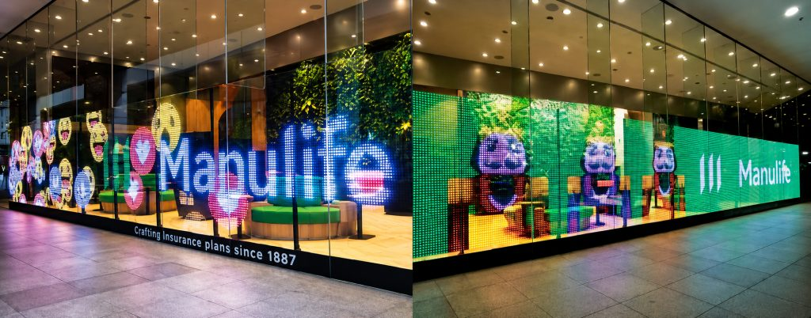
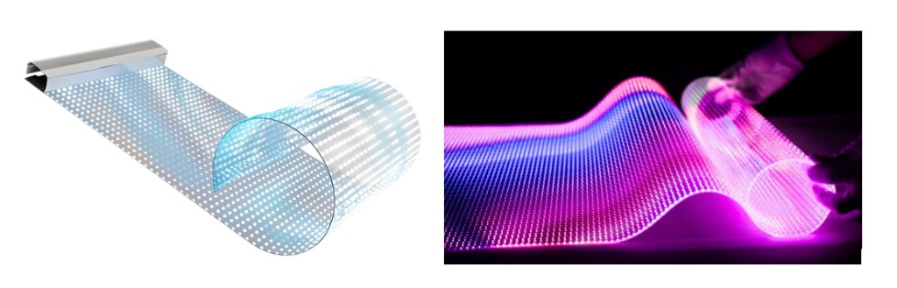
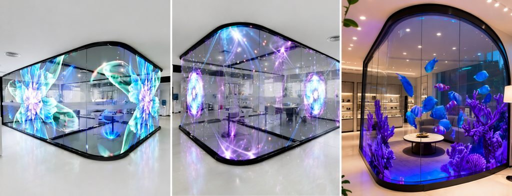
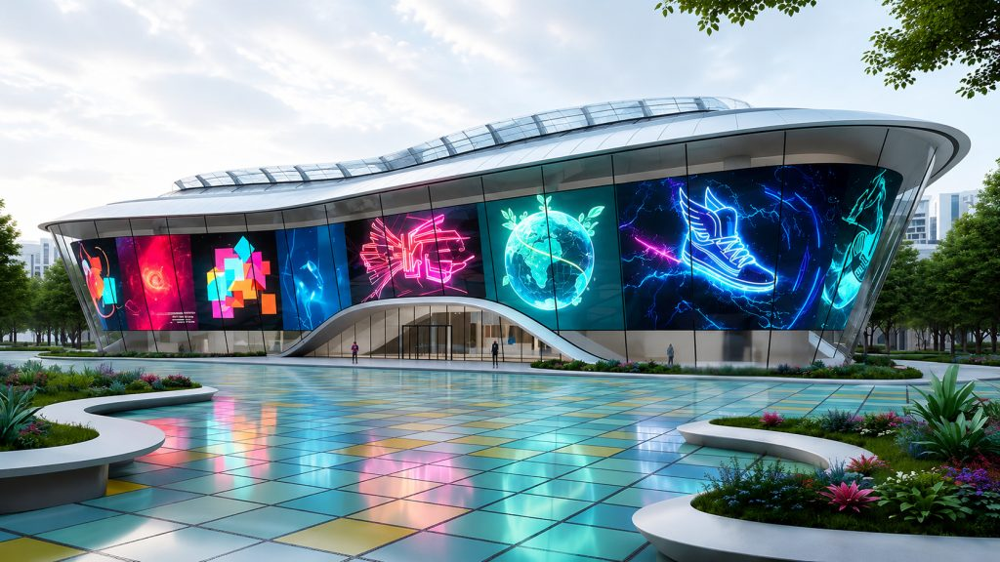
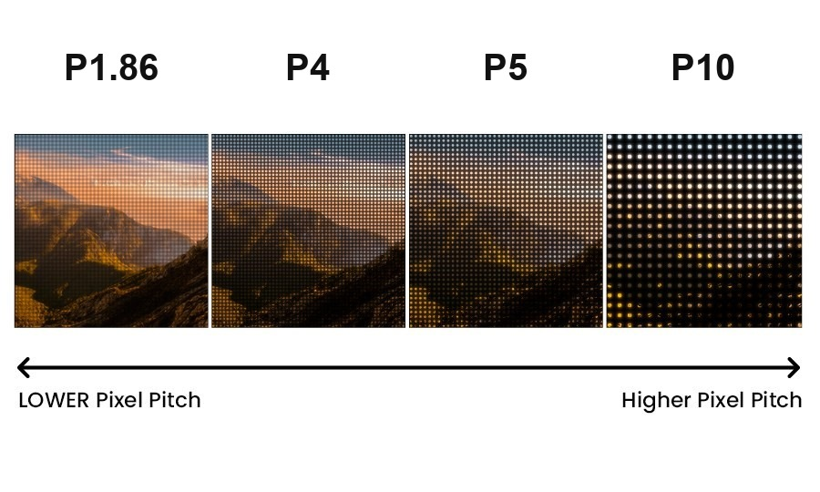

Прозрачные LED-плёнки и светодиодные экраны на стекло
Прозрачная LED-плёнка представляет собой светодиодный экран, который монтируется непосредственно на стекло витрины или фасада. Светодиодная плёнка на стекло сохраняет обзор и пропускает дневной свет, а при включении отображает видео, анимацию и рекламные материалы. Гибкая LED-плёнка устанавливается только с внутренней стороны существующего остекления и не требует металлокаркаса: прозрачный экран не изменяет облик здания и не уменьшает полезную площадь помещения. АТМ АЛЬЯНС поставляет и монтирует прозрачные LED-экраны под ключ, включая замер, подбор конфигурации, поставку комплекта, монтаж и настройку системы управления контентом.

LED-плёнка в цифрах
Новый блок: фактыЧто такое LED-плёнка и как она работает
Блок: текст + фотоПрозрачный гибкий LED-экран собирается из тонких светодиодных полос, закреплённых на прозрачной подложке при помощи самоклеящегося слоя. Полосы наклеиваются на стекло с определённым интервалом, который задаёт прозрачность конструкции: чем реже расположены светодиоды, тем больше света проходит через остекление и тем крупнее элемент изображения.
Подключение выполняется по типовой схеме: плёнка соединяется с приёмной картой, приёмная карта соединяется с контроллером, на контроллер поступает сигнал от компьютера или медиаплеера. Питание осуществляется от сети 220 В через блоки питания. Дополнительные коммуникации и усиление несущих конструкций не требуются, поэтому монтаж проводится на действующем объекте без остановки его работы.

Преимущества прозрачной LED-плёнки
Блок: карточки-преимуществаВысокая прозрачность
Витрина сохраняет обзорность: товар и интерьер видны с улицы, естественное освещение помещения не уменьшается.
Яркость, достаточная для дневного показа
Изображение остаётся различимым при прямом солнечном свете, в вечернее время яркость снижается автоматически.
Малый вес конструкции
Нагрузка на остекление минимальна, металлокаркас и подвесные конструкции не требуются.
Быстрый монтаж
Плёнка устанавливается на существующее стекло, объект продолжает работу во время проведения работ.
Гибкость материала
Конструкция монтируется в том числе на изогнутые и радиусные поверхности.
Оперативная смена контента
В отличие от печатной оклейки материалы обновляются удалённо и одновременно на всех объектах сети.
Где применяется светодиодная плёнка на стекло
Блок: фото-галерея + теги

Прозрачный светодиодный экран применяется на объектах с большой площадью остекления и высокой проходимостью:
Светодиодная плёнка для рекламы устанавливается как на отдельной витрине, так и на остеклении всего здания. Прозрачные экраны для рекламы позволяют использовать фасад в качестве постоянного рекламного носителя и одновременно сохранять обзор торгового зала.
Технические характеристики LED-плёнки
Блок: таблица + инфографика| Шаг пикселя | P1.86, P2, P2.5, P3.75, P4, P5, P6.25, P8, P10, P15, P20 |
| Прозрачность | от 60 до 90% в зависимости от шага пикселя |
| Яркость | 600, 1 000, 2 000 и 4 000 нит в зависимости от модели, автоматическая регулировка по датчику освещённости |
| Угол обзора | до 140 градусов |
| Питание | сеть 220 В через блоки питания |
| Управление контентом | компьютер, локальная сеть, интернет, облачная платформа |
| Сторона монтажа | только внутренняя сторона остекления |
| Монтаж | на существующее остекление, без металлокаркаса и несущих конструкций |
| Срок службы | до 11 лет при стандартной нагрузке |

Шаг пикселя подбирается по расстоянию просмотра: чем ближе зритель к остеклению, тем меньше должно быть значение. Для витрины на пешеходной улице применяются модели с шагом от P1.86 до P5, для фасада, рассчитанного на просмотр с проезжей части, достаточно P10 и выше. Яркость выбирается по уровню внешнего освещения: 600 и 1 000 нит для помещений, 2 000 и 4 000 нит для витрин и фасадов с интенсивной засветкой.
Конфигурации и цена за м²
Новый блок: цена за м²| Шаг пикселя | Прозрачность | Дистанция просмотра | Где ставят | Цена от |
|---|---|---|---|---|
| P1.86 | около 60% | до 2 м | витрины, интерьер | NN NNN ₽/м² |
| P2.5 | около 65% | 2-4 м | витрины, торговые залы | NN NNN ₽/м² |
| P4 | около 75% | 4-8 м | фасады, атриумы | NN NNN ₽/м² |
| P6.25 | около 80% | 6-12 м | фасады | NN NNN ₽/м² |
| P10 | около 85% | 10-20 м | медиафасады | NN NNN ₽/м² |
| P15, P20 | до 90% | от 15 м | крупные фасады | NN NNN ₽/м² |
В цену за м² входит плёнка с приёмной картой; контроллер, блоки питания, монтаж и настройка платформы считаются отдельно в КП.
Рассчитать LED-плёнку на витрину
Новый блок: расчётУкажите размер остекления, расстояние до зрителя и город. Пришлём расчёт с шагом пикселя, яркостью и сроком монтажа.
- КП в течение рабочего дня
- Образец плёнки с нужным шагом пикселя
- Монтаж только с внутренней стороны остекления
Цена и монтаж LED-плёнки
Блок: расчёт + этапыСтоимость под проект
Стоимость рассчитывается по площади остекления, выбранному шагу пикселя и составу комплекта, поэтому единый прайс-лист не публикуется. Купить LED-плёнку можно как для оформления отдельной витрины, так и для реализации медиафасада на всё здание. Для расчёта достаточно предоставить размеры остекления и фотографию объекта: специалисты АТМ АЛЬЯНС подготовят коммерческое предложение с итоговой стоимостью оборудования, стоимостью монтажных работ и сроком поставки.
Монтаж под ключ, 7 этапов
- Замер и подготовка стеклянной поверхности
- Очистка и обезжиривание стекла
- Нанесение модулей LED-плёнки
- Подключение токопроводящих шин
- Установка блоков питания и контроллера
- Настройка системы управления контентом
- Тестирование и ввод оборудования в эксплуатацию
Реализованные объекты
Новый блок: кейсы
Витрина салона
Монтаж изнутри без каркаса, работа объекта не останавливалась. площадь, шаг

Медиафасад
объект, площадь, шаг пикселя
Торговый зал
объект, результат
Объекты и цифры результата заполняет клиент; страница «Проекты» сейчас отдаёт 404.
Гарантия и сервис
Блок: гарантияНа поставляемое оборудование распространяется гарантия производителя. АТМ АЛЬЯНС выполняет монтаж, пусконаладочные работы и настройку системы управления контентом, а также обеспечивает последующее сервисное обслуживание, включающее замену модулей и блоков питания. Сеть офисов и складов компании охватывает 44 города России, таким образом сервисная поддержка становится доступна не только в Москве, но и в регионах.
Отзывы заказчиков
Новый блок: отзывы и рейтингиОтзыв по LED-плёнке: витрина, срок монтажа, как изменилась заметность точки.
Отзыв: фасад, согласование, контент.
Отзыв: витрина салона, замер и монтаж за день.
Для запуска собрать отзывы с Яндекс Карт и 2ГИС, тексты в прототипе условные.
Как заказать прозрачный LED-экран
Для начала работы достаточно оставить заявку с размерами остекления и описанием задачи: реклама на витрине, навигация, оформление входной группы или создание медиафасада. Инженер подберёт шаг пикселя и конфигурацию, рассчитает стоимость комплекта и монтажа, назовёт срок поставки.